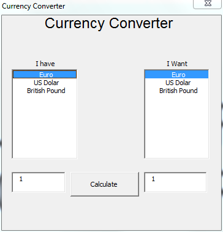
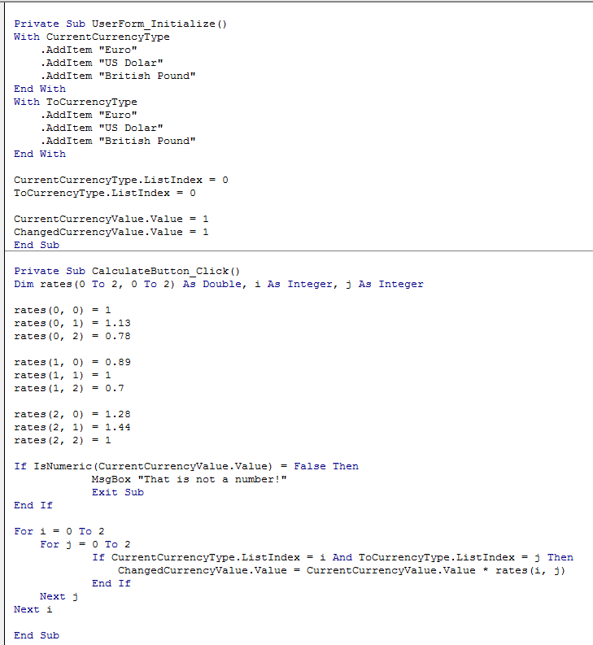

My Software
Introducing
Jordon's Online Browser

Jordon's Online Browser is a web browser that uses webkit and python 3. The web browser is still in development and will be a part of Jordon's Desktop Environment.
Download Now!- Python 3
- Python PyQt4
- Python requests
- Python pickle
- Python gi
Requirements
Glass OS
Glass OS is my most updated program. Its basically a software overlay that goes over the current operation system such Microsoft Windows or Linux. It can be ran in full-screen more or it can run in windowed mode by pressing "ESC". Glass OS is a Graphical user interface that allows the user to customise their user interface. Glass OS currently uses over 2,000 lines of python code and I will continue to develop it for the next few years.
Here's a video that I made that shows off Glass OS:
The repository link
Jpad
Jpad is a text editor like notepad or notepad++. It is designed to give you quick access to tools easily without loosing any functionality. It is included in Jordon OS, Glass OS and JDE and allows you to edit a wide range of files.

Jordon OS
Jordon OS is an older version of Glass OS that is a command line interface. It has some the same functionality as Glass OS but is less user-friendly as it uses the command line interface.
Here's the video:
Download Jordon OS v2
Download the User Manual for Jordon OS v2
Currency Converter
Currency Converter is a program that is used to convert currency from one to another.
This is my Visual Basic Code.
Download Currency Converter Python Download Currency Converter VBA Download Currency Converter C++ Source